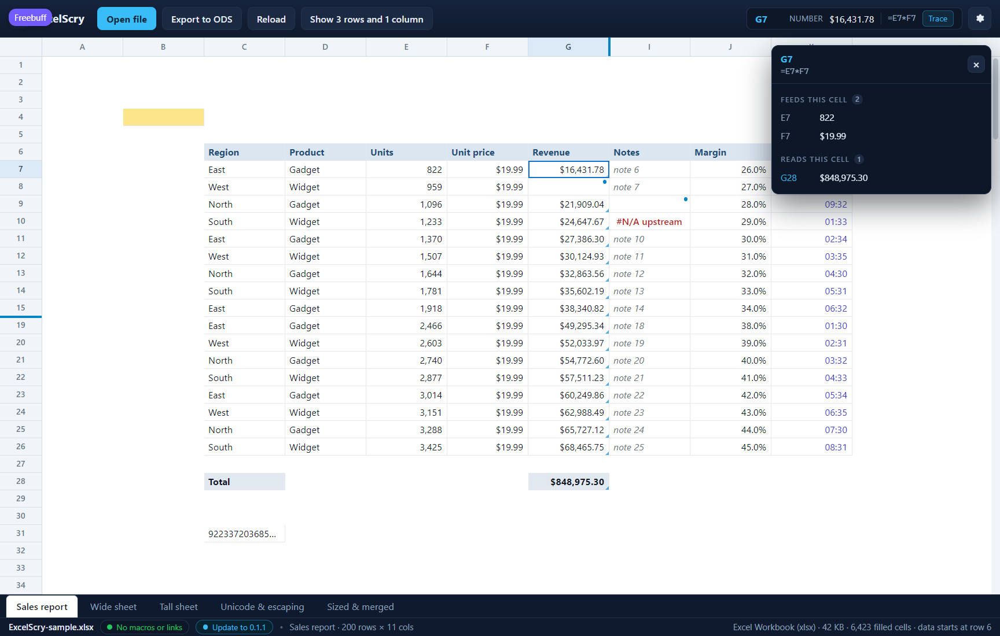

<!doctype html>
<meta charset="utf-8">
<title>ExcelScry — the cells behind a calculated figure</title>
<style>
  body { margin: 0; background: #1b1d22; color: #c9cdd6;
         font: 14px/1.5 Segoe UI, system-ui, sans-serif; }
  figure { margin: 0; }
  img { display: block; width: 100%; height: auto; }
  figcaption { padding: 12px 16px; }
  code { color: #8fd3ff; }
</style>
<figure>
  
  <figcaption>
    <code>G7</code> is calculated — <code>E7*F7</code> — so the readout offers
    <strong>Trace</strong> beside the formula, and the panel it opens names the
    cells that figure is made of: <code>E7</code> with its 822 units and
    <code>F7</code> with its <code>$19.99</code>, the two cells the formula
    multiplies. The other half answers the question the first half raises — if
    this number changed, what else would — and names <code>G28</code>, the
    total, whose <code>SUM(G7:G26)</code> reads this cell along with the rest of
    the column. Every reference is a button, so the chain is walked rather than
    only read: pressing <code>E7</code> moves the selection there and the panel
    with it, where the same cell now reports that nothing feeds it — it is typed
    in — and that <code>G7</code> reads it. The panel stays open while the arrow
    keys or a click move around the sheet, so the chain follows the cell in
    front, and `Esc` or the × closes it. A whole column or row named by
    a formula (<code>E:E</code>) is named in a note rather than expanded into
    thousands of cells, a range longer than two hundred cells stops with a note
    saying so, and a reference to another sheet is not followed: the chain is
    the sheet in front. (Shown in the UI harness, whose <code>Revenue</code>
    column is calculated and whose total under it sums that column.)
  </figcaption>
</figure>
